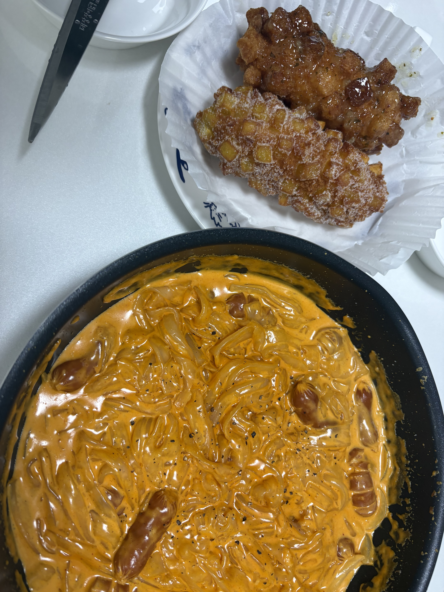
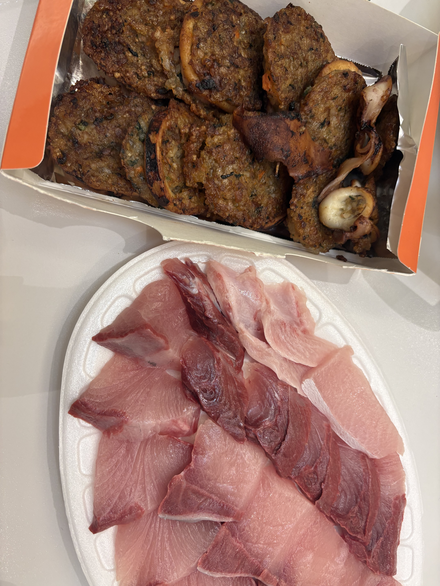
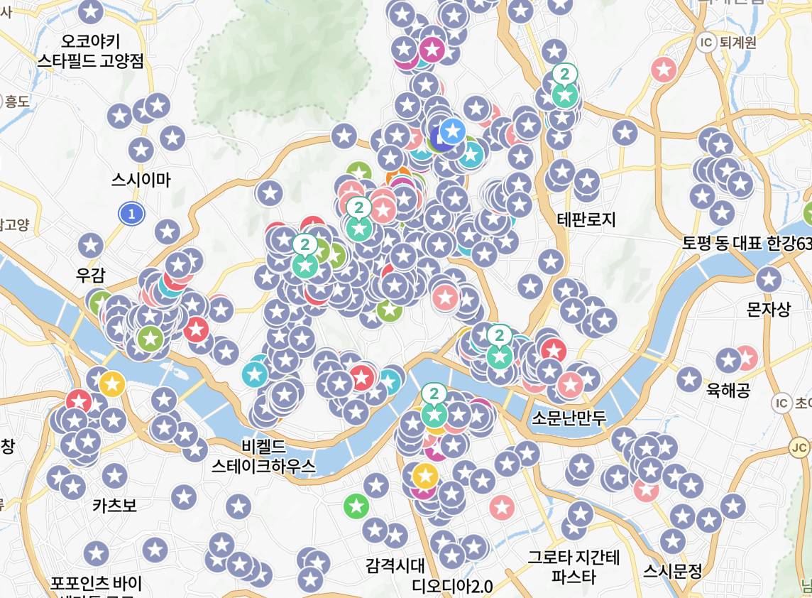
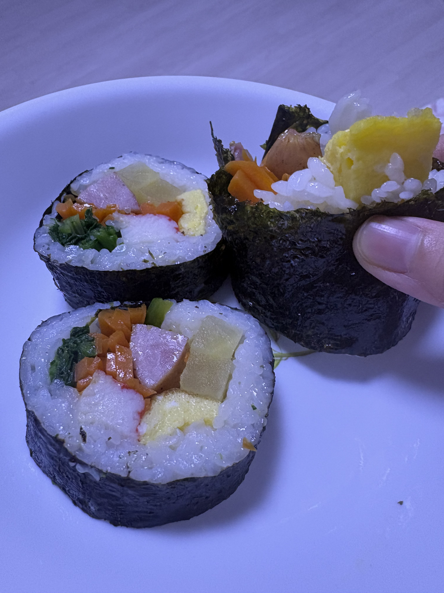
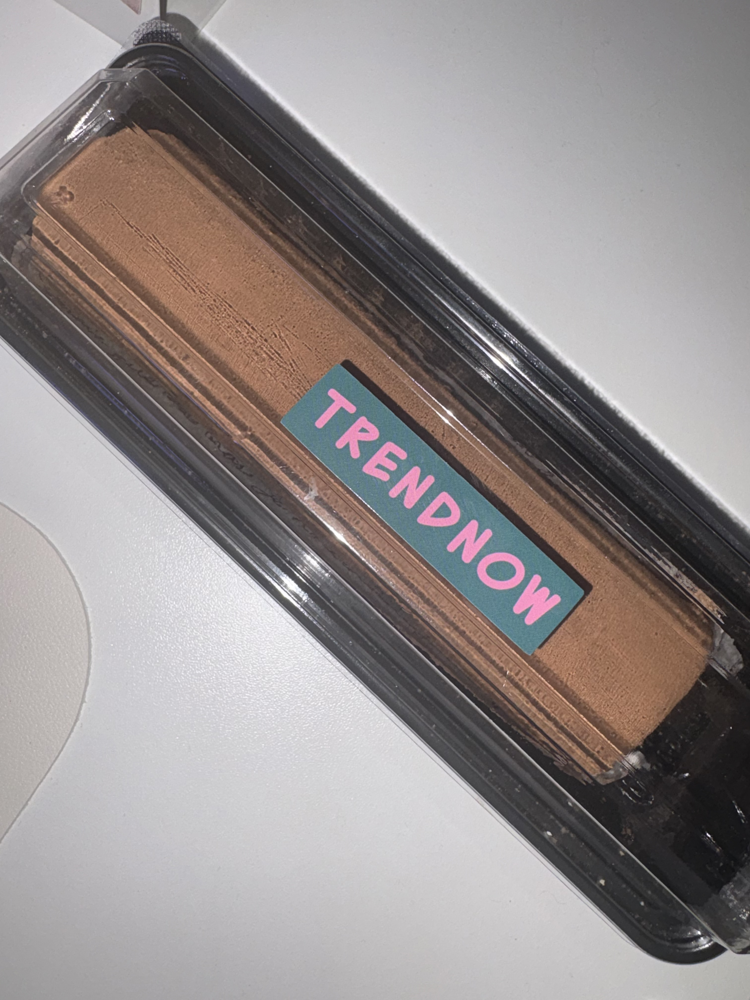
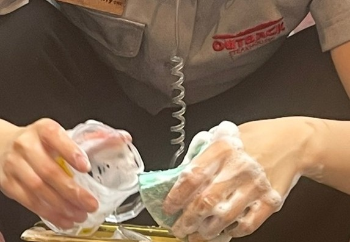
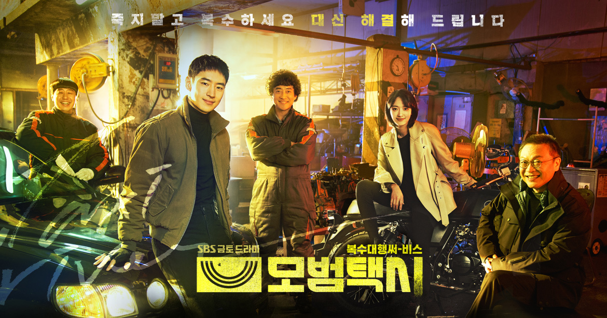

자기소개
토끼를 좋아해서 바니입니다. 익힌 당근은 잘 안 먹습니다.
못생긴 토끼 캐릭터는 싫어합니다. 그렇지만 대부분의 토끼는 에뻐요.
토끼를 좋아해서 바니입니다. 익힌 당근은 잘 안 먹습니다.
못생긴 토끼 캐릭터는 싫어합니다. 그렇지만 대부분의 토끼는 에뻐요.
| 이름 | 임혜정 |
|---|---|
| MBTI | ISFJ? ISFP? |
| 취미 | 네이버 지도 보면서 맛집 발견하기 |
| 좋아하는 음식 | 김밥, 훠궈, 말차, 면류(라멘, 우동, 파스타 등) |








감정과 태도를 오래 붙들어 준 작품들
거대한 세계관과 극단적인 선택들 속에서 인간이 끝까지 무엇을 지키려 하는지를 집요하게 보여주는 작품입니다. 인물마다 신념이 부딪히는 방식이 강하게 남아서, 보고 난 뒤에도 오래 생각하게 만드는 작품으로 기억하고 있습니다.

전개가 빠르고 통쾌해서 몰입감 있게 보게 되는 드라마입니다. 사건을 해결해 나가는 방식이 시원하고 캐릭터들의 팀플레이가 좋아서 인생 드라마로 넣었습니다.
오늘 새롭게 배운 것을 날짜와 함께 쌓아두는 공간
`submit` 이벤트에서 `preventDefault()`를 호출하고, 새 요소를 만들어 목록 앞쪽에 넣는 방식으로 즉시 반영되는 기록 UI를 구현했다.